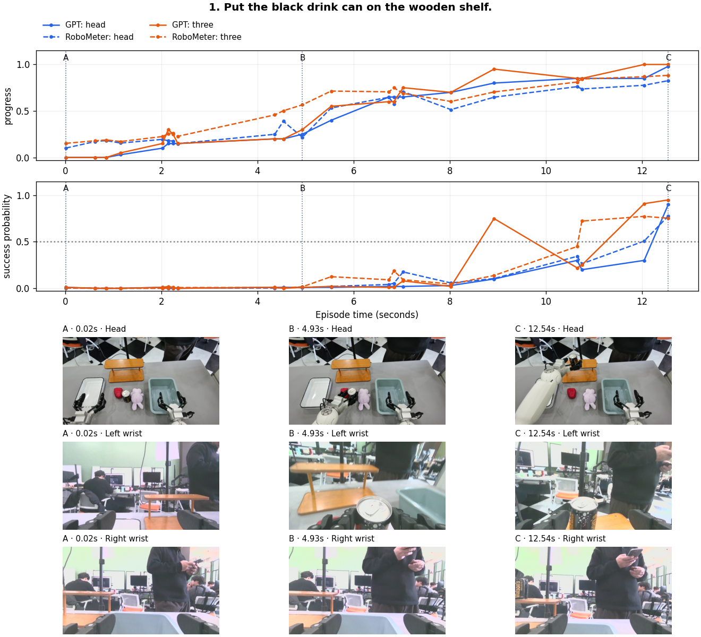
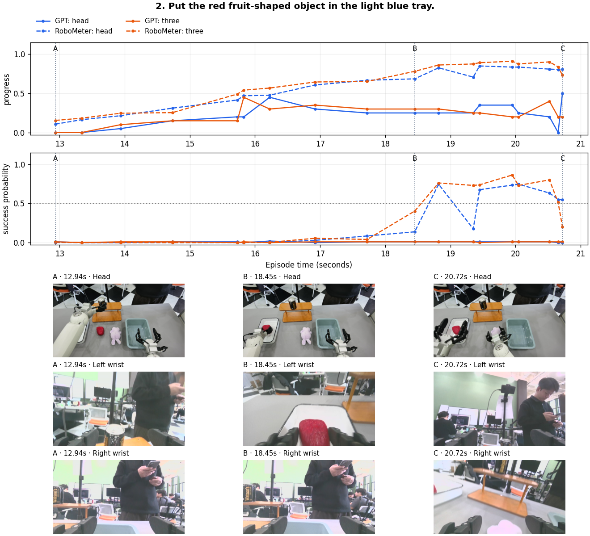
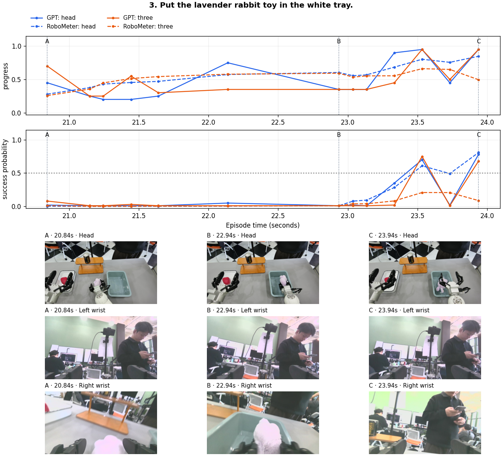

Run coverage: 914/914 camera/time-step judgments. GPT independently scored the same selected histories, without RoboMeter scores. GPT scores and probability estimates are not human ground truth or calibrated probabilities. Agreement does not establish accuracy. Three-camera images use horizontal tiles.
Complete: 104/104 judgments across 52 selected times. Blue: head only; orange: three cameras. Solid: GPT; dashed: RoboMeter. A/B/C match the image columns. Null GPT scores are gaps, not zero.

| Camera input | GPT final progress / success | RoboMeter at same time | GPT final evidence |
|---|---|---|---|
| head · 12.54s | 0.980 / 0.900 | 0.826 / 0.777 | The black can is upright on the wooden shelf's top tier and remains in place as the gripper opens and moves away. The nearby gripper partially obscures the can's base, but placement appears stable. |
| three · 12.54s | 1.000 / 0.950 | 0.883 / 0.754 | The black drink can is upright on the wooden shelf's upper surface. The left gripper has opened around it, and the wrist views show the can supported by the shelf; only a short post-release interval is visible. |
Source annotation review notes: Task boundary: confirm release and next target in the original head/wrist images.
| Time / camera input | Progress / success | Status and evidence |
|---|---|---|
| 0.02s / head | 0.000 / 0.010 | not_success: The black drink can is visible on the tabletop near the center, while the wooden shelf is at upper left; the can is not on the shelf. |
| 0.02s / three | 0.000 / 0.010 | not_success: The black drink can is upright on the tabletop beside the purple toy, separate from the wooden shelf. Neither gripper is holding it, and no placement is visible. |
| 0.63s / head | 0.000 / 0.000 | not_success: The black drink can is visibly still on the tabletop in front of the wooden shelf, not on the shelf. |
| 0.63s / three | 0.000 / 0.001 | not_success: The black drink can remains upright on the tabletop beside the purple toy, in front of the wooden shelf. Both grippers are away from the can, and no grasp or placement is visible. |
| 0.85s / head | 0.000 / 0.000 | not_success: The black drink can remains upright on the tabletop beside the purple toy, in front of the empty wooden shelf. Neither gripper is holding or contacting the can. |
| 0.85s / three | 0.000 / 0.000 | not_success: The black drink can remains upright on the tabletop beside the purple toy, in front of the wooden shelf. Neither gripper holds it, and no placement on the shelf is visible. |
| 1.16s / head | 0.030 / 0.000 | not_success: The left gripper has begun moving toward the black can, but the can remains upright on the table beside the purple toy. No grasp or lift is visible, and the wooden shelf remains empty. |
| 1.16s / three | 0.050 / 0.000 | not_success: The left gripper has begun moving toward the objects, but the black can remains upright on the tabletop beside the purple toy. No grasp or lift is visible, and the wooden shelf remains empty. |
| 2.02s / head | 0.100 / 0.010 | not_success: The left gripper has approached the black can, but the can remains upright on the table beside the purple toy. No secure grasp or lift is visible, and the wooden shelf remains empty. |
| 2.02s / three | 0.150 / 0.010 | not_success: The left gripper has approached the black can, which remains upright on the tabletop beside the plush toy. No secure grasp or lift is visible, and the wooden shelf remains empty. |
| 2.15s / head | 0.150 / 0.000 | not_success: The left gripper has approached the black can, but the can remains upright on the tabletop beside the purple toy. No secure grasp or lift is visible, and the wooden shelf remains empty. |
| 2.15s / three | 0.300 / 0.020 | not_success: The wooden shelf is still visibly empty at the last time step. A robot gripper is near/partially occluding the objects on the table, but there is no visible black can placed on the shelf or evidence of stable release. |
| 2.24s / head | 0.150 / 0.000 | not_success: The left gripper has approached the black can, which remains upright on the table beside the purple toy. A secure grasp is not visible, and the wooden shelf remains empty. |
| 2.24s / three | 0.250 / 0.010 | not_success: The wooden shelf is visibly empty at the last time step. The black can remains near the tabletop objects and appears possibly occluded by the gripper; no release or stable placement on the shelf is visible. |
| 2.34s / head | 0.150 / 0.000 | not_success: The left gripper has approached the black can, but a secure grasp is not visible. The can remains on the tabletop beside the purple toy; the wooden shelf is empty. |
| 2.34s / three | 0.150 / 0.000 | not_success: The left gripper has approached and is positioned around the black can, which remains upright on the table. A secure grasp or lift is not visible, and the wooden shelf is still empty. |
| 4.36s / head | 0.200 / 0.010 | not_success: The left gripper has moved around the black can, but the can remains at its original tabletop location. A secure grasp is unclear; no lift, transfer, or placement on the empty wooden shelf is visible. |
| 4.36s / three | 0.200 / 0.010 | not_success: The left gripper is positioned around the black drink can near its original tabletop location. A secure grasp or lift is not clearly established; the wooden shelf remains empty, with no placement or release visible. |
| 4.54s / head | 0.200 / 0.010 | not_success: The left gripper has closed around the black can at its original tabletop location, though a secure grasp is not confirmed. No lift or transfer is visible, and the wooden shelf remains empty. |
| 4.54s / three | 0.200 / 0.000 | not_success: The left gripper is positioned around the black can beside the red object and purple toy. A secure grasp or lift is not yet clear; the can remains away from the empty wooden shelf, with no placement or release visible. |
| 4.93s / head | 0.250 / 0.010 | not_success: The left gripper appears closed around the black can near its original tabletop position, possibly beginning to lift it. The wooden shelf remains empty; no placement or release is visible. |
| 4.93s / three | 0.300 / 0.010 | not_success: The left gripper encloses the black drink can near its original tabletop position, apparently beginning to lift it. The wooden shelf remains empty; no placement or release is visible. |
| 5.53s / head | 0.400 / 0.010 | not_success: The left gripper appears to hold the black can lifted above the table and moving toward the wooden shelf. The can remains in the gripper in front of the shelf; no release or stable shelf placement is visible. |
| 5.53s / three | 0.550 / 0.020 | not_success: The black drink can is visibly grasped and lifted in the left gripper near the wooden shelf, but it has not been released or visibly placed stably on the shelf. |
| 6.73s / head | 0.650 / 0.020 | not_success: The left gripper has lifted the black drink can and moved it above the wooden shelf. The can remains held; no release or stable placement on the shelf is visible. |
| 6.73s / three | 0.600 / 0.010 | not_success: The left gripper has lifted the black drink can and moved it above the wooden shelf. The can remains held in the gripper, visibly suspended above the shelf; no release or stable placement is shown. |
| 6.84s / head | 0.650 / 0.020 | not_success: The robot has lifted the black drink can and moved it above the wooden shelf, but the can remains held in the gripper. No release or stable placement on the shelf is visible. |
| 6.84s / three | 0.600 / 0.010 | not_success: The left gripper has lifted the black drink can and moved it above the wooden shelf area. The can remains visibly held and suspended above the shelf; no release or stable placement is shown. |
| 7.03s / head | 0.650 / 0.020 | not_success: The left gripper has lifted the black drink can and moved it above the wooden shelf. The can remains held above the shelf; no release or stable placement is visible. |
| 7.03s / three | 0.750 / 0.080 | not_success: The black can is visibly held by the robot gripper above the wooden shelf, but it has not been released or visibly placed stably on the shelf. |
| 8.02s / head | 0.700 / 0.030 | not_success: The robot has lifted the black drink can and moved it above the wooden shelf. At the last snapshot, the gripper still holds the can; release and stable placement on the shelf are not visible. |
| 8.02s / three | 0.700 / 0.020 | not_success: The left gripper has lifted the black drink can and moved it above the wooden shelf. At the last snapshot the can remains gripped and visibly suspended above the shelf; release and stable placement are not shown. |
| 8.92s / head | 0.800 / 0.100 | not_success: The black drink can is visibly grasped above the wooden shelf, but it has not been released or shown stably resting on the shelf. |
| 8.92s / three | 0.950 / 0.750 | success: The black drink can is visibly positioned on the top surface of the wooden shelf at the last time step; the gripper remains nearby and partially occludes the can's lower side, so release/stability is not perfectly clear. |
| 10.65s / head | 0.850 / 0.300 | not_success: The black can has been moved onto the wooden shelf's upper surface and appears upright, but the gripper remains around it. Release and stable unsupported placement are not confirmed. |
| 10.65s / three | 0.850 / 0.220 | not_success: The black drink can has been lifted and lowered upright onto the wooden shelf's top tier. The left gripper still surrounds the can; release and stable unsupported placement are not visible. |
| 10.75s / head | 0.850 / 0.200 | not_success: The black can is visibly grasped and positioned over the left side of the wooden shelf, but the gripper remains closed around it, so release and stable placement are not confirmed. |
| 10.75s / three | 0.850 / 0.250 | not_success: The black drink can has been moved upright onto or immediately above the wooden shelf's upper surface. The left gripper still surrounds the can; release and stable unsupported placement are not visibly confirmed. |
| 12.04s / head | 0.850 / 0.300 | not_success: The black can has been lifted and positioned upright on the wooden shelf's upper level. The left gripper still surrounds the can, so release and stable unsupported placement are not confirmed. |
| 12.04s / three | 1.000 / 0.910 | success: The black drink can is upright on the wooden shelf's upper tier. The final wrist view shows the gripper fingers opened away from the can, supporting release; the gripper remains nearby and prolonged stability is not shown. |
| 12.54s / head | 0.980 / 0.900 | success: The black can is upright on the wooden shelf's top tier and remains in place as the gripper opens and moves away. The nearby gripper partially obscures the can's base, but placement appears stable. |
| 12.54s / three | 1.000 / 0.950 | success: The black drink can is upright on the wooden shelf's upper surface. The left gripper has opened around it, and the wrist views show the can supported by the shelf; only a short post-release interval is visible. |

| Camera input | GPT final progress / success | RoboMeter at same time | GPT final evidence |
|---|---|---|---|
| head · 20.72s | 0.500 / 0.000 | 0.810 / 0.547 | The red fruit-shaped object is visibly placed in the white tray on the left, while the light blue tray remains empty; the object is therefore in the wrong destination. |
| three · 20.72s | 0.200 / 0.010 | 0.732 / 0.203 | The red fruit-shaped object was grasped and released into the white tray on the left, where it remains at the final step. The intended light blue tray on the right is visibly empty. |
Source annotation review notes: Task boundary: confirm release and next target in the original head/wrist images.; The red fruit is in the white tray, contrary to the configured fruit-to-blue rule. Corrective transfer remains unfinished.
| Time / camera input | Progress / success | Status and evidence |
|---|---|---|
| 12.94s / head | 0.000 / 0.010 | not_success: The red fruit-shaped object is on the table to the left of the light blue tray, outside it. The robot gripper is over the tray; no grasp or placement of the fruit is visible. |
| 12.94s / three | 0.000 / 0.010 | not_success: The red fruit-shaped object remains on the tabletop to the left of the light blue tray. The tray contains no visible red object, and the robot gripper is open near the tray. |
| 13.34s / head | 0.000 / 0.001 | not_success: The red fruit-shaped object remains on the tabletop to the left of the light blue tray. Neither gripper holds it, and it has not been placed in the tray. |
| 13.34s / three | 0.000 / 0.001 | not_success: The red fruit-shaped object remains on the tabletop to the left of the light blue tray. Neither gripper holds it, and no placement in the tray is visible. |
| 13.94s / head | 0.050 / 0.000 | not_success: The red fruit-shaped object remains on the tabletop to the left of the light blue tray. The left gripper is approaching but has not visibly grasped it; the tray contains no red object. |
| 13.94s / three | 0.100 / 0.010 | not_success: The red fruit-shaped object is still visibly on the table beside the light blue tray, and the tray appears empty. The robot gripper is near the object but no grasp or placement is visible. |
| 14.73s / head | 0.150 / 0.010 | not_success: The left gripper has approached and partly surrounds the red fruit-shaped object, which remains on the tabletop outside the light blue tray. No lift, transfer, or release into the tray is visible. |
| 14.73s / three | 0.150 / 0.010 | not_success: The left gripper has moved around the red fruit-shaped object, which remains on the tabletop outside the light blue tray. Grasp closure is unclear; no lift, transfer, or placement is visible. |
| 15.73s / head | 0.200 / 0.010 | not_success: The left gripper has approached and partly surrounds the red fruit-shaped object, which remains at tabletop level outside the light blue tray. No confirmed lift, transfer, or release into the tray is visible. |
| 15.73s / three | 0.150 / 0.000 | not_success: The left gripper has approached and surrounds the red fruit-shaped object, which remains on the tabletop beside the light blue tray. No lift, transport, or released placement in the tray is visible. |
| 15.83s / head | 0.200 / 0.000 | not_success: The left gripper has approached and partly surrounds the red fruit-shaped object, which remains at the tabletop location outside the light blue tray. A secure grasp or lift is not established; no transfer or placement is visible. |
| 15.83s / three | 0.450 / 0.010 | not_success: The grippers visibly surround the red fruit-shaped object, but it remains outside the light blue tray; no release or stable placement inside the tray is visible. |
| 16.23s / head | 0.450 / 0.020 | not_success: The left gripper visibly holds the red fruit-shaped object, but it remains left of the light blue tray; the tray appears empty, so placement and release are not complete. |
| 16.23s / three | 0.300 / 0.000 | not_success: The left gripper has closed around the red fruit-shaped object and appears to begin lifting it. The object remains outside the light blue tray; no transport into the tray, release, or stable placement is visible. |
| 16.92s / head | 0.300 / 0.000 | not_success: The left gripper holds the red fruit-shaped object lifted above the table, left of the light blue tray. The object has not been placed or released in the tray. |
| 16.92s / three | 0.350 / 0.010 | not_success: The left gripper has grasped and lifted the red fruit-shaped object, but it remains held to the left of the light blue tray. No release or placement in the tray is visible. |
| 17.72s / head | 0.250 / 0.010 | not_success: The left gripper holds the red fruit-shaped object over the white tray on the left. The light blue tray on the right remains empty; no release or placement in the correct tray is visible. |
| 17.72s / three | 0.300 / 0.010 | not_success: The robot has grasped and lifted the red object, but at the last snapshot it remains held over the white tray on the left. The light blue tray on the right is empty; no release or placement there is visible. |
| 18.45s / head | 0.250 / 0.010 | not_success: The robot has grasped the red fruit-shaped object but holds it over the white tray on the left. The light blue tray on the right remains empty; no release or stable placement in it is visible. |
| 18.45s / three | 0.300 / 0.010 | not_success: The red fruit-shaped object is held between the left gripper fingers over the white tray on the left. The light blue target tray on the right remains empty; no release or placement in it is visible. |
| 18.82s / head | 0.250 / 0.010 | not_success: The robot picked up the red fruit-shaped object but moved it into the white tray on the left. At the last step the gripper remains near the object, making release uncertain; the intended light blue tray on the right is empty. |
| 18.82s / three | 0.300 / 0.010 | not_success: The robot picked up the red fruit-shaped object but lowered it into the white, dark-rimmed tray on the left. The gripper appears open at the last step; the intended light blue tray on the right remains empty. |
| 19.35s / head | 0.250 / 0.010 | not_success: The robot released the red fruit-shaped object into the white tray on the left and withdrew its gripper. The requested light blue tray on the right remains empty. |
| 19.35s / three | 0.250 / 0.010 | not_success: The red fruit-shaped object has been released into the white tray on the left. The intended light blue tray on the right remains empty; the left gripper is open and withdrawn. |
| 19.45s / head | 0.350 / 0.010 | not_success: The red fruit-shaped object has been released and rests in the white tray on the left. The requested light blue tray on the right remains empty; the gripper has withdrawn from the fruit. |
| 19.45s / three | 0.250 / 0.001 | not_success: The red fruit-shaped object was grasped and released into the white tray on the left, where it remains as the gripper withdraws. The requested light blue tray on the right is empty. |
| 19.95s / head | 0.350 / 0.010 | not_success: The red fruit-shaped object is visibly released and resting in the white tray on the left, while the light blue tray remains empty. The object was moved, but to the wrong destination. |
| 19.95s / three | 0.200 / 0.010 | not_success: The red fruit-shaped object was grasped and released into the white tray on the left, where it remains at the last step. The requested light blue tray on the right is visibly empty. |
| 20.05s / head | 0.250 / 0.010 | not_success: The red fruit-shaped object was released and rests in the white tray on the left, not the light blue tray on the right. The light blue tray remains empty. |
| 20.05s / three | 0.200 / 0.010 | not_success: The red fruit-shaped object was grasped and released into the white tray on the left, where it remains at the last step. The intended light blue tray on the right is visibly empty. |
| 20.52s / head | 0.200 / 0.010 | not_success: The red fruit-shaped object was grasped and released into the white tray on the left, where it remains at the last step. The requested light blue tray on the right is visibly empty. |
| 20.52s / three | 0.400 / 0.010 | not_success: The red fruit-shaped object is visibly resting in a white tray on the left, while the light blue tray remains empty. Placement appears stable but at the wrong destination. |
| 20.65s / head | 0.000 / 0.000 | not_success: The red fruit-shaped object is visibly resting in the white tray on the left, not in the light blue tray; the blue tray is empty. |
| 20.65s / three | 0.200 / 0.010 | not_success: The red fruit-shaped object was released and remains in the white tray on the left, while the requested light blue tray on the right is visibly empty. The grippers are no longer holding the red object. |
| 20.72s / head | 0.500 / 0.000 | not_success: The red fruit-shaped object is visibly placed in the white tray on the left, while the light blue tray remains empty; the object is therefore in the wrong destination. |
| 20.72s / three | 0.200 / 0.010 | not_success: The red fruit-shaped object was grasped and released into the white tray on the left, where it remains at the final step. The intended light blue tray on the right is visibly empty. |

| Camera input | GPT final progress / success | RoboMeter at same time | GPT final evidence |
|---|---|---|---|
| head · 23.94s | 0.950 / 0.780 | 0.848 / 0.809 | The lavender rabbit is visibly lying inside the white tray at the last time step. The gripper remains above and partly occludes it, so release is not completely certain, but the toy appears stably placed in the tray. |
| three · 23.94s | 0.950 / 0.680 | 0.496 / 0.087 | The lavender rabbit is visibly inside the light-colored tray at the final time step. The gripper remains near or partly around the rabbit, so release and fully stable placement are somewhat occluded, but the toy appears seated in the tray. |
Source annotation review notes: Task boundary: confirm release and next target in the original head/wrist images.; The red fruit is in the white tray, contrary to the configured fruit-to-blue rule. Corrective transfer remains unfinished.; The rabbit is in the light blue tray, contrary to the configured toys-to-white rule. Move it to the white tray.
| Time / camera input | Progress / success | Status and evidence |
|---|---|---|
| 20.84s / head | 0.450 / 0.020 | not_success: The lavender rabbit is visible at the robot gripper between the trays, outside the white tray on the left. No release or stable placement in the white tray is visible. |
| 20.84s / three | 0.700 / 0.080 | not_success: The lavender rabbit is visibly held near the white tray, but it is not visibly released or stably positioned inside the tray; the tray appears empty. |
| 21.15s / head | 0.250 / 0.010 | not_success: The lavender rabbit is between the robot's gripper fingers near the center of the table, outside the white tray on the left. No release or placement in the tray is visible. |
| 21.15s / three | 0.250 / 0.010 | not_success: The lavender rabbit is between the right gripper's jaws, outside the white tray on the left. No release or placement in the tray is visible. |
| 21.24s / head | 0.200 / 0.010 | not_success: The lavender rabbit remains outside the white tray, beside the right gripper near the blue bin. The gripper partly obscures it, so a secure grasp is unclear; no placement or release in the white tray is visible. |
| 21.24s / three | 0.250 / 0.010 | not_success: The lavender rabbit is between the right gripper's fingers, outside the white tray on the left. The grasp is partly occluded; no placement in the tray or release is visible. |
| 21.44s / head | 0.200 / 0.010 | not_success: The lavender rabbit is at the right gripper near the center of the table, outside the white tray on the left. The gripper partly obscures contact with the toy; no placement or release into the tray is visible. |
| 21.44s / three | 0.550 / 0.030 | not_success: The lavender rabbit is visibly grasped by the robot near the white/light-blue tray, but remains outside the tray and has not been released into a stable placement. |
| 21.64s / head | 0.250 / 0.010 | not_success: The lavender rabbit appears held by the right gripper outside the white tray on the left. It has not been placed or released into the tray; the gripper partly obscures the grasp. |
| 21.64s / three | 0.300 / 0.010 | not_success: The right gripper appears to hold and begin lifting the lavender rabbit, but it remains outside the white tray on the left. No release or stable placement in the tray is visible. |
| 22.14s / head | 0.750 / 0.050 | not_success: The lavender rabbit is visibly held by the gripper above the tray, but it has not been released and stable placement inside the tray is not visible. |
| 22.14s / three | 0.350 / 0.010 | not_success: The lavender rabbit is grasped and lifted by the right gripper, still outside the white tray on the left. No release or stable placement in the tray is visible. |
| 22.94s / head | 0.350 / 0.010 | not_success: The lavender rabbit is held by the right gripper over or partly inside the pale blue bin. The white tray on the left contains a red object, not the rabbit. No release or stable placement in the white tray is visible. |
| 22.94s / three | 0.350 / 0.010 | not_success: The lavender rabbit is grasped and lifted, but at the last snapshot it remains in the gripper over the blue-green tray. The requested white tray is on the left; no release or stable placement there is visible. |
| 23.04s / head | 0.350 / 0.020 | not_success: The lavender rabbit has been lifted and moved into the blue-green bin on the right, still between the gripper fingers. The white tray on the left contains a red object, not the rabbit; release and stable placement in the requested tray are not visible. |
| 23.04s / three | 0.350 / 0.010 | not_success: The lavender rabbit has been lifted and moved into the blue-green bin on the right, while the white tray remains on the left. The gripper still surrounds the toy; release and stable placement are not visible. |
| 23.13s / head | 0.350 / 0.010 | not_success: The robot lifted the lavender rabbit but lowered it into the blue-gray bin on the right, rather than the white tray on the left. The gripper still surrounds the toy, so release and stable placement are unclear. |
| 23.13s / three | 0.350 / 0.010 | not_success: The lavender rabbit has been lifted and lowered into the blue-gray bin on the right, rather than the white tray on the left containing a red object. The gripper remains around the rabbit; release and stable placement are not clearly established. |
| 23.33s / head | 0.900 / 0.350 | not_success: The lavender rabbit is visibly inside the white tray, but the gripper still appears to be holding or contacting it, so release and stable placement are not confirmed. |
| 23.33s / three | 0.450 / 0.020 | not_success: The lavender rabbit has been lifted and appears released into the blue-gray bin on the right. The instructed white tray is on the left and still contains the red object; the rabbit is not in it. The gripper partly obscures the rabbit's final resting position. |
| 23.53s / head | 0.950 / 0.700 | success: The lavender rabbit is visibly inside the white tray and appears to be resting at the bottom; the gripper remains nearby/partially occludes it, so release and full stability are somewhat uncertain. |
| 23.53s / three | 0.950 / 0.750 | success: The lavender rabbit is visibly inside the white tray in the final head-camera view. The gripper appears near the tray but release is partially occluded, so stable placement is likely but not completely certain. |
| 23.73s / head | 0.450 / 0.020 | not_success: The lavender rabbit appears released and resting in the blue-green bin on the right as the gripper opens. The white tray on the left contains a red object, not the rabbit; the toy was placed in the wrong destination. |
| 23.73s / three | 0.500 / 0.010 | not_success: The lavender rabbit appears released and resting in the blue-gray bin on the right, with the gripper open above it. The requested white tray is on the left and contains a red object; the rabbit was placed in the wrong container. |
| 23.94s / head | 0.950 / 0.780 | success: The lavender rabbit is visibly lying inside the white tray at the last time step. The gripper remains above and partly occludes it, so release is not completely certain, but the toy appears stably placed in the tray. |
| 23.94s / three | 0.950 / 0.680 | success: The lavender rabbit is visibly inside the light-colored tray at the final time step. The gripper remains near or partly around the rabbit, so release and fully stable placement are somewhat occluded, but the toy appears seated in the tray. |